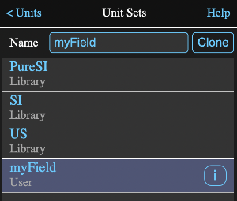

While Math Minion does all its calculations internally with SI values, conversion units allow inputs and outputs in the units of your choice.
But beyond simple conversions, Math Minion employs a technique known as dimensional analysis in all its numeric calculations.
This is a very powerful technique for preventing calculation errors. Understanding how Math Minion uses it and other unit features is worth a few minutes of reading.
Despite the scary name, dimensional analysis is pretty simple and highly effective at preventing screw ups in your calculations.
Essentially it relates every value back to its fundamental SI properties and tracks those through calculations to determine the properties of the result.
The seven fundamental properties and their SI units are:
For example a velocity value is a length divided by a time value. Thus
60 mile/h
has a length power, or dimension, of 1 and a time power of -1.
If we divide that by 10 s, then the result has a length power of 1 and a time power of -2 and represents an acceleration value.
Trying to add another value to it that had a different set of powers, say another velocity, would produce an invalid result.
Math Minion tracks these powers through all its calculations and will warn you if you attempt an illegal operation.
It will also show you the type of your calculation results and if they aren't what you are expecting. you know you have a problem.
Let's say you input the following formula:
6 mile + 2 km
While this would appear to be an illegal mixing of units, it is perfectly correct in Math Minion.
The calculation would proceed as follows:
What if we changed the formula to:
6 miles / 2 min
The process would be similar to before in that 6 mile would become a length value of 9656.064 m and 2 min would become 120 s. However the divide operator would not require the fundamental type powers to be the same.
Rather it would subtract all the denominator powers from the numerator powers, which would result in a length power of 1 and a time power of -1.
This would be associated with the result i.e. 80.4672 m/s.
If our display unit were still miles, it would be ignored, since the result type powers no longer match that of the unit mile.
Changing the display unit to mph, would result in 180 mph being displayed.
Some examples might be:
The type names don't affect the calculations, but are used for displaying the type of a calculation result and also for associating a display unit with a type when defining unit display sets.
Not every unit combination will have a named type and unit types that don't have named definitions will be reported as an "Unknown Type" and the display unit will always be comprised of the appropriate combination of fundamental SI units.
A unit display set defines what unit should be used to display a variable of a given unit type. For example the US velocity unit is ft/s.
Three sets are hard wired into Math Minion and can't be altered or deleted:
See below for how to define your own sets.
Tapping the Units button at the bottom of the display will present a view where you can select the default unit set as well as define your own custom units and unit sets.
Here the SI set is the default. Tapping on one of the other names will make that set the default. Note that a custom set that has been named myField has been added.
Tap on the Custom Units button to bring up the custom unit editor.
To enter a new unit, simply type the definition into the field at the top of the view and tap the return key on the keyboard. The definition must be of the form:
newUnitName = number existingUnit
where number is what the existing unit would be multiplied by and existing unit is a current single or compound unit. See the unit browser for information on the form of a compound unit.
An example might be:
workday = 8 h
After defining this unit a formula "1 workday", would resolve to 28800 seconds, or 8 hours.
The existing unit can be a compound unit, so it should be possible to define any unit in terms of the fundemental SI or other units. In the image above, two nonsensical units have been defined in terms of compound units.
To change an existing custom unit, simply redefine it and tap the return key. Tapping on the definition will prefill the input field with the existing definition.
To delete a unit, just click on its Delete button.
To return to the units view tap on the back button at the upper left.
On the units view tap on the Unit Sets button to bring up the custom set list.
To create a new unit set, select an existing set by tapping its row and then tap the Clone button to make a copy of it. You can edit the set name in the Name field.
In the above image, the US set was cloned and renamed myField.
User sets have an info button on the right and tapping it will open an editor where you can modify or delete the set. Note that you cannot rename or edit the unit sets that come preinstalled in Math Minion.
To return to the units view tap the back button at the upper left.
From the Unit Sets view, tap on the info button on the right of a user set to produce its set editor.
To change the name of a unit type or the unit associated with it, tap on its row then edit the name and unit fields as appropriate. In the image above, the Area type has been selected, which has automatically filled in the Name and Unit field with the existing values.
To create a new type, clear any selection with the Clear Selection button and enter the name and unit in the appropriate fields.
Note that if the unit type defined by the given unit is the same as another unit type, an error box will appear and no change will be made. There can only be one defined unit type name for a given set of unit powers.
To delete a type just tap its delete button.
Custom units and sets are stored with individual sessions and are not universal.
If you wish to use your custom units and sets whenever you create a new session, you could create an otherwise empty template session with those units and sets and duplicate it from the utility menu of the sessions view when you want a new session.